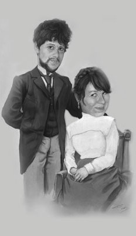
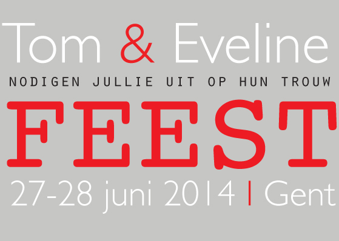

Welkom op de site die ons trouwfeest voor jullie uit de doeken doet!
Wij passen niet in een typische trouwzaal, en de stress van een klassiek trouwfeest zien wij ook niet zitten. Dus hebben we beslist om het helemaal te doen zoals wij er van dromen! Je zou kunnen zeggen dat we een pick-nick-chique trouwfeest geven. Gezellig, onder vrienden & familie en op plaatsen waar we ons het meest thuisvoelen. Bereid je maar voor op onze eclectische stijl, met hier en daar een eigenaardigheid.
Om het volledige programma te kunnen zien moet je eerst de code die je bij je uitnodigingskaart gekregen heb invullen in onderstaand vakje. De rest zal te voorschijn komen!
We maken het onmiddelijk officiëel! De burgerlijke trouw gaat door in het stadhuis van Gent. Om 15u20 begint de ceremonie. Het is dus zeker aangewezen om een beetje eerder te komen. We spreken aan de ingang van het stadhuis af om 15u! Tot dan!! Aangezien het grote feest pas zaterdag is willen we toch nog even een kleine gelegenheid voorzien om te vieren dat we pasgetrouwd zijn. Na het stadhuis gaan we dus naar HUSET voor een feestelijk wafelbuffet met huisgemaakte wafels!
Stadhuis van Gent
Botermarkt 1
9000 Gent
Parkeren kan je in de parking van de Vrijdagsmarkt. Ook op de kouter en op St-Michiels zijn er ondergrondse parkings. Te voet kan je dan gemakkelijk naar het stadhuis wandelen. Ben je met de trein? Dan neem je best de tram 1 richting centrum en stap je af aan de korenmarkt. Je bent er dan vlakbij!
HUSET
Hoogstraat 49 9000 Gent
Parkeren doe je best in de parking op St-Michiels of de ramen. Deze bevinden zich beiden op wandelafstand van HUSET. Neem je de trein neem je best tram 1 richting centrum en stap je af op de korenmarkt of de burgstraat.
JAWEL!
Maak je maar klaar voor een pic-nic/alternatieve ceremonie en receptie in een wei naast de leie in Deinze! We hebben van de Graaf Henry 't Kint de Roodenbeke de toestemming gekregen om op zijn mooie weide te vertoeven.
Daar willen we in de mooie natuur een kleine alternatieve ceremonie houden. Met erna een gezellige receptie / pick nick.
Wij zorgen voor dekentjes, stoeltjes en versnaperingen. Wie eens in het water wil springen kan dat zeker doen! Ons lijk er niets leukers dan even gezellig te vertoeven in een mooi stukje natuur samen met jullie! Wij gaan alvast met de fiets naar daar.
Dus wie ons wil vergezellen kan dat zeker!
p.s. bij slecht weer gaat dit in HUSET door.

De hoge bomen aan de Leie Maargemdijk 9800 Deinze
Parkeren kan je beperkt aan de maaigemdijk. Maar dat kan snel volstaan en dan is het moeilijk keren. Je kan ook parkeren aan het Ooidonck kasteel en te voet 10 minutjes wandelen. Wij verkiezen de fiets! Wij vertrekken aan HUSET en het duurt ongeveer een klein uurtje om daar te geraken. En sowieso plezier verzekerd! :)
's Avonds gaan we verder in HUSET.
Het achterhuis wordt omgetoverd tot een heuse feestzaal! Waar jullie kunnen komen eten, drinken, lachen, babbelen en dansen!
In het café kan je dan rustig even bekomen als het allemaal even te veel wordt.
We zorgen voor wat speciale gebeurtenissen die de avond nog leuker maken!
Wij zijn al helemaal enthousiast!
Hopelijk jullie ook! :)
P.S.Wens je vegetarisch te eten gelieve tijdens je bevestiging dit te vermelden.

HUSET
Hoogstraat 49 9000 Gent
Parkeren doe je best in de parking op St-Michiels of de ramen. Deze bevinden zich beiden op wandelafstand van HUSET. Neem je de trein neem je best tram 1 richting centrum en stap je af op de korenmarkt of de burgstraat.
's Avonds gaan we verder in HUSET.
Het achterhuis wordt omgetoverd tot een heuse feestzaal! Waar jullie kunnen komen drinken, lachen, babbelen en dansen!
In het café kan je dan rustig even bekomen als het allemaal even te veel wordt.
We zorgen voor wat speciale gebeurtenissen die de avond nog leuker maken!
Wij zijn al helemaal enthousiast!
Hopelijk jullie ook! :)
HUSET
Hoogstraat 49 9000 Gent
Parkeren doe je best in de parking op St-Michiels of de ramen. Deze bevinden zich beiden op wandelafstand van HUSET. Neem je de trein neem je best tram 1 richting centrum en stap je af op de korenmarkt of de burgstraat.
Het mooiste cadeau is dit feest kunnen vieren met al wie ons dierbaar is!
Wie toch graag iets wil doneren aan onze toekomst kan dat vrijblijvend doen op onderstaand rekeningnummer:
BE1245 456 678 23
KREDBEBB